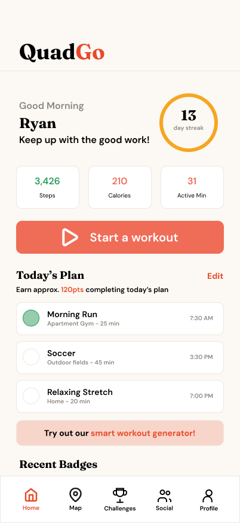
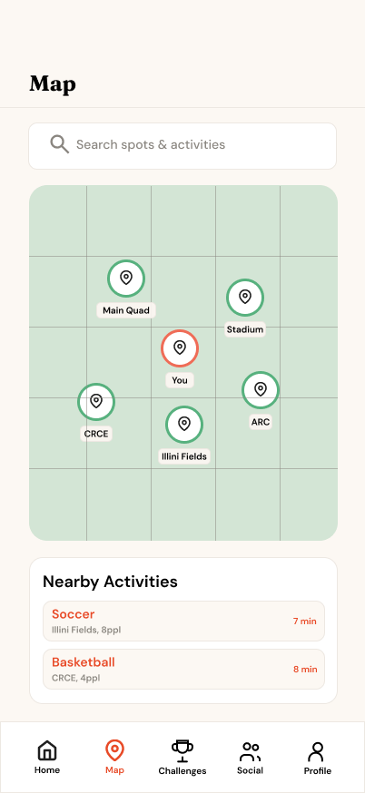
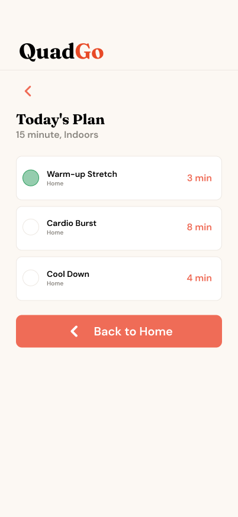
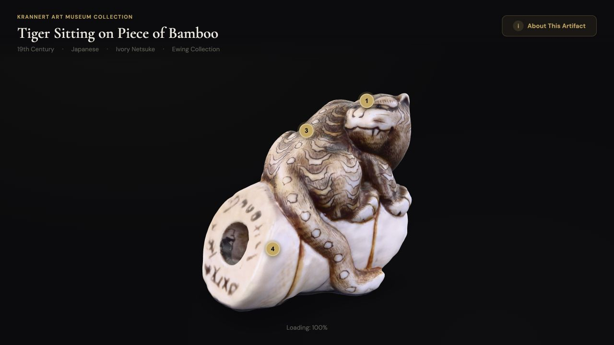

QuadGo
Product design · User research



Helping students fit movement into campus life through flexible workouts and social motivation.
View case studyUIUC · INFORMATION SCIENCES
Information Sciences student at the University of Illinois Urbana-Champaign interested in UX design, human-computer interaction, technology, and digital media.
My interests sit at the intersection of information, design, and digital media.
I’m interested in how people interact with digital systems, and how research, visual design, and technology can make those experiences clearer and more intuitive.
Product design · User research



Helping students fit movement into campus life through flexible workouts and social motivation.
View case studyInteraction design · Development

Connecting a museum object to its cultural context through 3D exploration and storytelling.
View case studyI researched market trends and readers’ needs to inform book covers and publishing products. My work focused on visual hierarchy, information clarity, and emotional appeal, with concepts refined through product reviews.
I also used generative AI for research synthesis, ideation, and visual exploration, evaluating outputs against audience needs and design goals.
Seeking a Summer 2027 internship in UX or product design. Get in touch to talk about opportunities or my work.